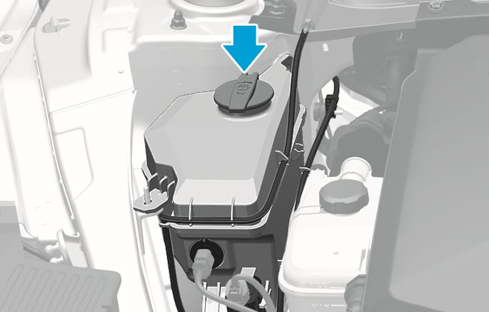

와셔액 보충하기
-
냉각수나 부동액을 와셔액 대신 사용하지 마십시오. 냉각수나 부동액을 유리에 뿌리면 시야 확보가 어려워지며, 차체 및 도장에 접촉해 손상을 일으킬 수 있습니다.
-
와셔액은 알코올 성분을 함유하므로 화염 또는 불꽃을 멀리하십시오.
-
와셔액을 마시지 마십시오. 와셔액에는 인체에 유독한 성분이 함유되어 있습니다.
-
기온이 낮은 계절에는 빙결 방지 기능을 가진 겨울용 와셔액을 사용하십시오. 와셔액이 얼면 와셔액 탱크와 와셔 모터가 손상될 수 있습니다.
-
와셔 모터의 손상을 방지하려면 와셔액이 없는 상태로 와셔 모터를 작동하지 마십시오.
-
기온이 높은 계절에는 일반 수돗물을 와셔액 대신 사용하거나 시판 와셔액을 사용할 수도 있습니다.
-
와셔액이 모자라면 클러스터에 와셔액 경고등이 켜집니다.
-
후드를 열고 와셔액 보조 탱크 캡을 여십시오.

2C_WasherFluid
-
와셔액을 보충한 후 보조 탱크 캡을 닫으십시오.